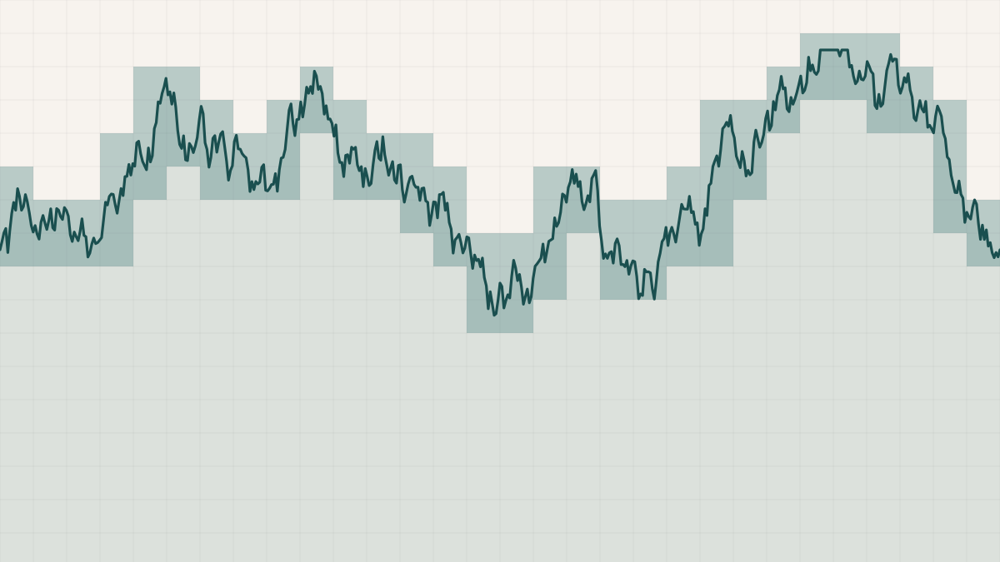

How Many Fractal Dimensions Does a Coastline Have?
In 1967 Benoit Mandelbrot asked a question that sounds like it has an answer: how long is the coast of Britain? It does not. Measure it with a ruler a hundred kilometres long and you get one number; measure it with a ten-kilometre ruler and the ruler now fits into bays and around headlands the long one skipped over, and the total grows. Shrink the ruler again and it grows again, and there is no length it settles down to — as the ruler goes to zero, the measured coastline goes to infinity. This is the coastline paradox, and Mandelbrot's resolution was one of the founding moves of fractal geometry: stop asking for the length, which does not exist, and ask instead for the rate at which the length blows up as the ruler shrinks. That rate is a stable number, and it is the fractal dimension.
The picture is worth holding onto before the arithmetic. A smooth curve, measured with ever-finer rulers, converges to a fixed length — its dimension is one, an ordinary line. A coastline does not converge, because at every scale there is new detail: bays within bays, inlets within inlets. The fractal dimension measures how aggressively that new detail appears. A dimension of one means a smooth shore; a dimension approaching two means a coast so convoluted it starts to fill the plane like a region rather than trace it like a line. The walking-divider method turns this directly into a measurement: step a fixed-length divider along the coast, count the steps, shrink the divider, and watch the measured length climb.
The coastline paradox, and the divider method that measures it. The long ruler cuts across the inlets in three big chords; the short ruler follows them in ten small ones and reports a longer coast. How fast the measured length climbs as the ruler shrinks is the fractal dimension — the number meant to be independent of the ruler you happened to use.
There is a second way to measure the same thing, and it matters that there is more than one. Box-counting lays a grid over the coastline and counts how many boxes it touches; then it uses a finer grid and counts again. A smooth line touches roughly twice as many boxes each time you halve the box size; a crinkly coast touches more than that, because the finer grid catches detail the coarse one straddled. The exponent relating the box count to the box size is, once again, the dimension. Two methods, one number — or so the theory promises. Working with a student, I wanted to run both against real coastlines and see whether the promise held.
We took five stretches of the Indian coast chosen to be as different from each other as possible: the tidal inlet of the Gulf of Kutch, the mangrove maze of the Sundarbans, the straight rocky Konkan shore, the barrier lagoon at Chilika, and the reef-and-sandbar shallows of the Palk Strait. Each was pulled from the same public vector map, measured by both methods, and — because box-counting is notoriously sensitive to exactly where you place the grid — bootstrapped over a hundred and twenty-eight random grid offsets to put honest error bars on each estimate. The geomorphology came through clearly. The Sundarbans, all distributary channels and tidal creeks, scored the highest dimension at about 1.47; the Konkan coast, a comparatively featureless rocky line, scored the lowest at 1.08, barely fractal at all. Every coast landed above one, as a coastline must. As a way of ranking shorelines by their raw crinkliness, the method worked exactly as advertised.
And then the two methods disagreed with each other, consistently, and the disagreement is the real subject of this essay. Across all five coasts, the divider method returned a systematically lower dimension than box-counting — and not by a rounding error. For the Chilika lagoon, box-counting said 1.41 and the divider said 1.18, a gap of nearly a quarter of a dimension for the same shoreline measured on the same afternoon. Worse, box-counting would not even agree with itself: as we rasterised each coast at finer resolution, its estimate drifted steadily downward — the Gulf of Kutch fell from 1.32 to 1.28 to 1.23 as the pixels shrank. The number changed depending on how sharp your image was, where you dropped the grid, and which portion of the log–log plot you decided was the "real" straight line. There is no single answer sitting in the coastline waiting to be read off.
This is more than a nuisance, because of what fractal dimension was for. It was invented precisely to escape the coastline paradox — to replace a length that depends on your ruler with a dimension that does not. The whole promise was scale-invariance: a property of the coast itself, independent of the instrument. What the five coasts show is that the promise is only half-kept. The paradox did not vanish when we moved from length to dimension; it climbed up one level of abstraction and reappeared. Length depended on the ruler; dimension depends on the method — on box-counting versus divider, on the resolution, on the grid offset, on the fitting band. You cannot measure your way out of the coastline paradox. You can only choose the level at which you are willing to let it live.
What survives is quieter and, I think, more useful than a clean constant would have been. Both methods, for all their disagreement on the value, agreed on the order: the Sundarbans is more convoluted than the Konkan by either estimator, and by a wide margin. The dimension is not a fixed property a coastline possesses the way it possesses a latitude. It is a measurement, and like any measurement it comes with an instrument, a scale, and an uncertainty, and it is honest only when reported with all three attached. A coastline's fractal dimension is real in the way a coastline's temperature is real: a genuine number that nonetheless means nothing until you say how, and at what scale, you took it.
An honest caveat that should go before any stronger claim
The specific dimensions here should be read as comparative, not absolute. Every coast was projected with Web Mercator, which distorts area with latitude, so the values are trustworthy for ranking these five against each other but not for stacking against a dimension someone else measured on a different projection or a different map. The estimates move with rasterisation resolution, grid placement, and the choice of scaling band — that method-dependence is, after all, the point of the essay — so a bare number without its method attached is close to meaningless. The Palk Strait's reef-and-sandbar geometry produced the widest error bars of the five, a reminder that some coasts resist a single dimension more than others. And the whole analysis rests on one coarse vector product at a fixed scale; a finer shoreline source might well shift every value, though probably not the ranking. What the study earns is not "the fractal dimension of the Sundarbans is 1.47" but something more careful: measured this way, at this scale, with this uncertainty, the Sundarbans is markedly more fractal than the Konkan — and the number you cite should never travel without that clause.